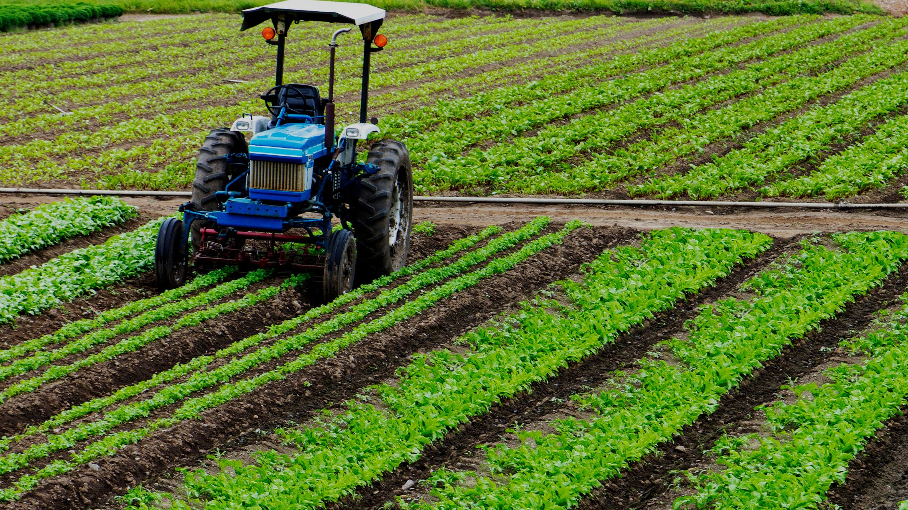

A Propos: 
Le projet agriculture durable est mené dans le but de réduire la dégradation des ressources naturelles et augmenter la valeur de la production des secteurs productifs.
Ce site internet s’adresse avant tout aux formateurs, conseillers et coaches agricoles, responsable environnement et foresterie.
Les agriculteurs, jeunes promoteurs et autres acteurs en milieu rural intéressés par le développement agricole durable sont aussi invités à utiliser et développer le site

Objectifs
- Améliorer la capacité d’accueil du milieu agricole pour la biodiversité
- Diversifier les services éco systémiques du milieu
- Favoriser la cohésion sociale entre agriculteurs et citoyens
- Elaboration et la mise en oeuvre du plan d’action
- Appui et l’accompagnement des acteurs des filières agricoles locales
Entreprise :
Site web : www.Agro-Tunisie.com
Email : agro-tunisie@gov.tn
Secteurs : Agriculture
Taille de l’entreprise : 1-10 employés
Fondée en : 2020
Domaines : foresterie, eau et irrigation, agriculture et renforcement de capacités.
Qualifications :
-Formation d’ingénieur Agro économiste
-15 ans d’expérience professionnelle générale
-Expériences dans le domaine de l’appui aux agriculteurs.
-Conseil technico-économique, de l’analyse économique.
-La planification, la conception, l’exécution, maîtrise d’oeuvre et la gestion des projets.
PUB :
-Découvrez la récente brochure - Edition 2020
-Soutien à l’agriculture biologique dans vos démarches territoriales
-Pourquoi un projet de développement de l'Agriculture Biologique sur mon territoire ? -Quels intérêts ?
Contact :
- Client :
- Poste : Ingénieur(e), Coordonnateur (trice) de la mission.
- Region: Tunis, Beja, Jendouba, Manouba, Sidi Bouzid, Gafsa, Siliana, Tozeur …
- Langues : Arabe, Français, Anglaise …
- Secteur : Agriculture, Agrobusiness, Consulting
- Email : agro-tunisie@gov.tn
- Tel. : +216 111111
- Fax : +216 111444